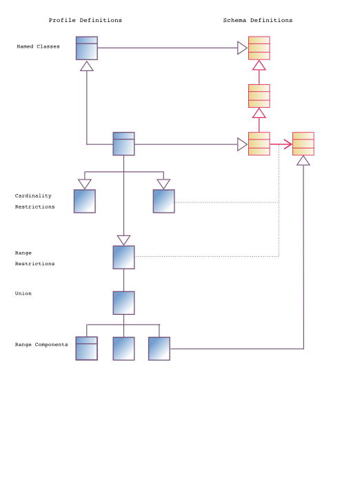

Profile Structure Diagram
This diagram shows the classes making up a profile and their relationship to the associated schema. (Note: UML symbols are used.)

See OWL as a Profile Language for a full description.

This diagram shows the classes making up a profile and their relationship to the associated schema. (Note: UML symbols are used.)

See OWL as a Profile Language for a full description.